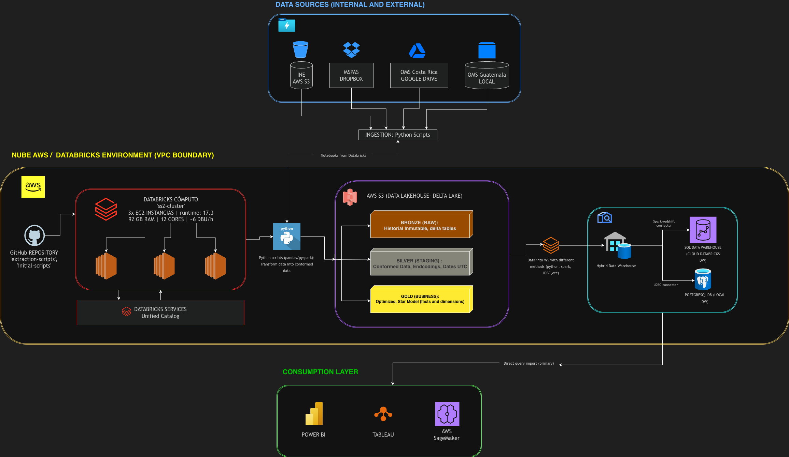
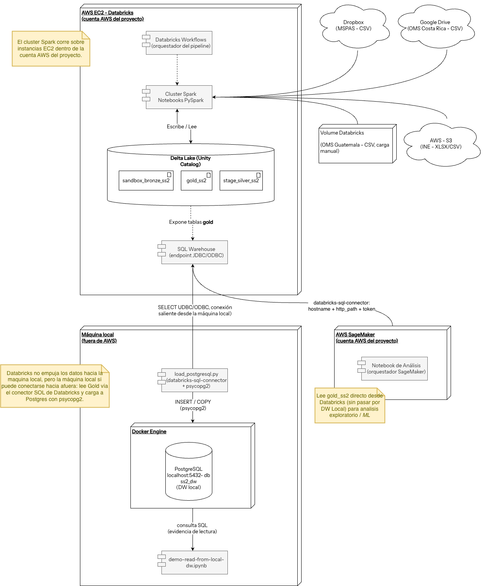

Arquitectura — Fase 3¶
Visión general¶
La Fase 3 no modifica el pipeline de datos construido en fases
anteriores (ingesta a Bronze → Silver → Gold sobre Databricks/Unity
Catalog, más el DW local en PostgreSQL). Lo que cambia es la capa de
consumo: el modelo dimensional Gold (gold_ss2), ya estable, pasa a
ser la fuente única para tres consumidores analíticos —Machine Learning
en AWS SageMaker y dos herramientas de BI, Power BI y
Tableau.
En otras palabras, Fase 1 y Fase 2 dejaron listo el qué (los datos limpios y modelados); Fase 3 explota ese activo para responder el para qué: comparación de mortalidad Pre/Post-COVID, modelos predictivos y tableros interactivos.
Arquitectura final¶

Arquitectura end-to-end con la capa de consumo de Fase 3 resaltada.
El diagrama mantiene las tres zonas ya conocidas y formaliza una cuarta:
| Zona | Componentes | Estado en Fase 3 |
|---|---|---|
| Data Sources | INE (AWS S3), MSPAS (Dropbox), WHO Costa Rica (Google Drive), WHO Guatemala (carga local) | Sin cambios — ingesta vía scripts Python a Bronze |
| Databricks / VPC AWS | Databricks Compute (cluster Spark sobre EC2), Unity Catalog, Delta Lake S3 con capas Bronze / Silver / Gold | Sin cambios — Gold ya poblado y estable |
| Consumption Layer | Power BI, Tableau, AWS SageMaker | Capa protagonista de Fase 3 |
Qué cambia respecto a Fase 2¶
La topología de ingesta y transformación es idéntica a la documentada en Arquitectura — Fase 2. La única diferencia arquitectónica es la expansión de la capa de consumo:
| Capa de consumo | Fase 2 | Fase 3 |
|---|---|---|
| Power BI | ✅ | ✅ |
| Tableau | ✅ | ✅ |
| AWS SageMaker (ML) | — | ✅ (nuevo) |
SageMaker se incorpora como tercer consumidor de Gold. Lee gold_ss2
directamente desde Databricks (vía el SQL Warehouse, sin pasar por el DW
local) para análisis exploratorio y entrenamiento de modelos de ML.
Diagrama de Despliegue¶
El diagrama anterior muestra el flujo lógico por zonas. El siguiente diagrama de despliegue muestra la topología física —qué corre dentro de la cuenta AWS del proyecto y qué corre fuera, en la máquina local— e incluye AWS SageMaker como consumidor de Gold de Fase 3.

Puntos clave:
- El cluster Spark de Databricks corre sobre instancias EC2 dentro de la cuenta AWS del proyecto. Las capas Bronze → Silver → Gold viven en Delta Lake (Unity Catalog) y se exponen vía el SQL Warehouse (endpoint JDBC/ODBC).
- Databricks no tiene visibilidad de
localhost, pero la máquina local sí puede iniciar una conexión saliente. Por esoload-postgresql.pyleegold_ss2directo del SQL Warehouse víadatabricks-sql-connectory carga PostgreSQL (Docker) conpsycopg2— el DW local. - AWS SageMaker (cuenta AWS del proyecto) lee
gold_ss2directamente desde el SQL Warehouse —sin pasar por el DW local— para análisis exploratorio y ML. Es el consumidor que Fase 3 añade a la topología.
Consumidores de Gold¶
Los tres consumidores leen del mismo modelo dimensional Gold, lo que garantiza que ML y BI hablan sobre cifras idénticas:
| Consumidor | Conexión a Gold | Propósito en Fase 3 |
|---|---|---|
| AWS SageMaker | databricks-sql-connector contra el SQL Warehouse (hostname + http_path + token) |
Modelos de ML / análisis predictivo sobre mortalidad Pre/Post-COVID |
| Power BI | Conector nativo de Databricks (Power Query + DAX) | Tableros interactivos, KPIs y análisis comparativo Pre/Post-COVID |
| Tableau | Conector Databricks (JDBC/ODBC) | Segunda herramienta BI — visualización analítica e interoperabilidad |
Doble conteo en fact_defunciones
Igual que en BI, los modelos y consultas de Fase 3 sobre
fact_defunciones deben filtrar por dim_fuente.source_system o
elegir un único corte. INE-edad e INE-geografía son dos cortes de las
mismas defunciones; sumarlos sin filtrar duplica las muertes.
Ver el detalle en Arquitectura — Fase 2.
Por qué Gold como fuente única de ML y BI¶
- Una sola verdad — ML (SageMaker) y BI (Power BI, Tableau) consumen
el mismo
gold_ss2, así un dashboard y un modelo nunca contradicen las cifras del otro. - Sin re-ingesta — Fase 3 no toca las fuentes ni el pipeline; reduce el riesgo y aísla el trabajo de ML/BI de la lógica de transformación.
- Galaxy schema listo para análisis — las dos fact tables y las cinco dimensiones compartidas ya resuelven grain, periodo COVID y linaje, por lo que los consumidores trabajan sobre datos modelados, no crudos.